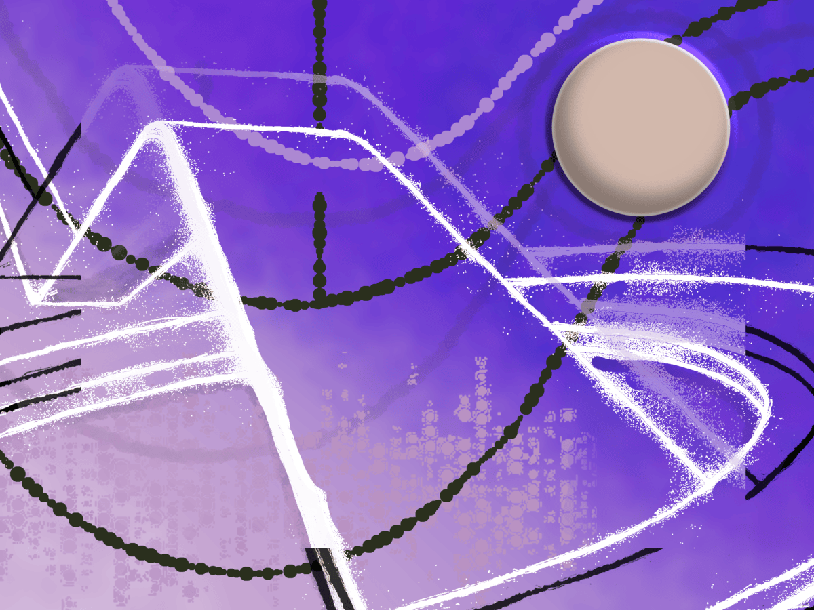
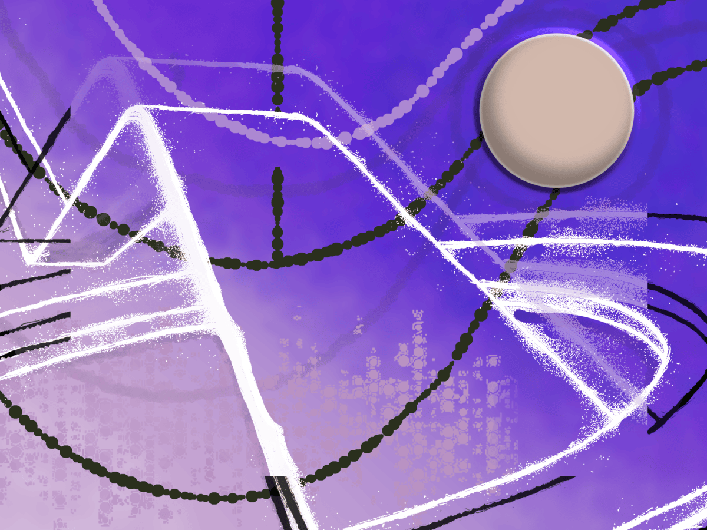
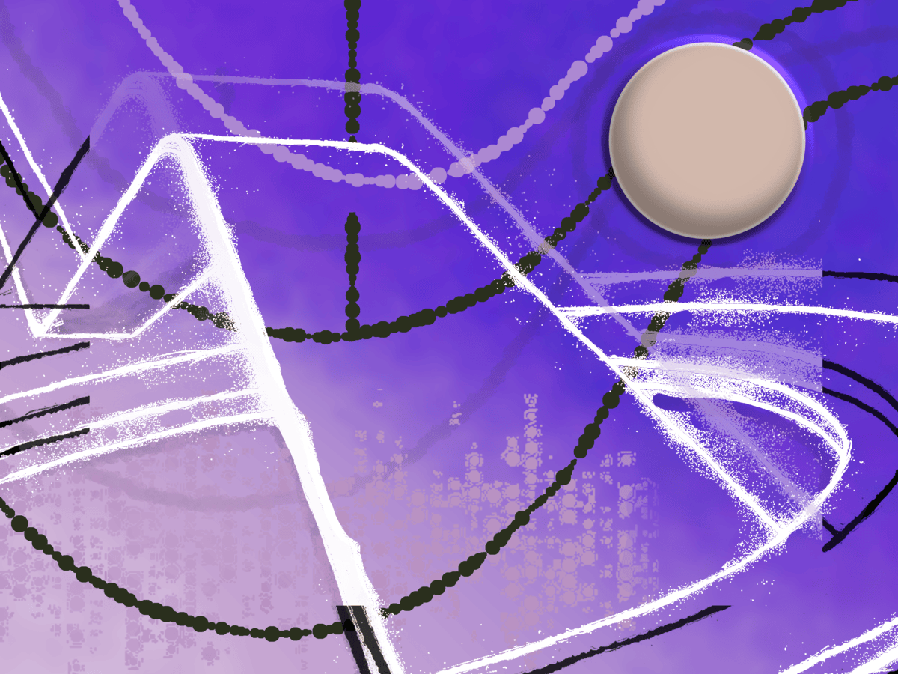
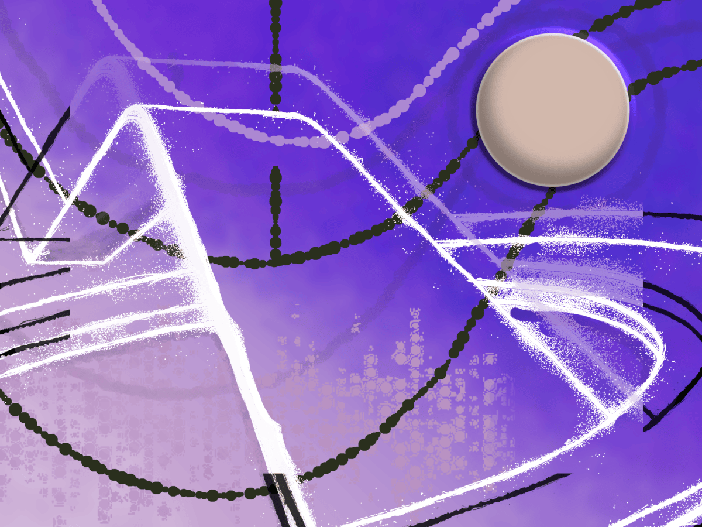

This is a poster I made using photoshop. The cityscape was created by using a screenshot I took from the video game Jet Set Radio Future.
This was a image I created using the pen tool in Illustrator. The goal of this project was to create an image that would resemble a product advertisment.
These are drawings were made with charcoal. Thank you Donald for enlighting me with this beautiful medium!
This is an animation I created using After Effects. The goal of the project was to make the animation look like a playable video game.
This was a model car I laser-cut using Illustrator. My inspiration was to create a formula-1-esque racecar, while keeping the features as simplistic as possible. I am proud with how the car turned out, especially becuase this was my first laser cutting project!
This image was a created using photoshop with inspiration from the song 'The Pass Less Travelled' by the artist Vegyn. The idea behind this assignment was to create a visual piece that incorporates synesthesia.
This is a 3d-model I made in blender. I used concept-art that was found hidden in the game files of the video game Fur-Fighters as inspiration. This object sadly never made it into the game, so I thought it would be cool for me to create the 3d existence it was supposed to have.
All of the shapes in this image were created using the pen tool in Illustrator, which I then colored in with Photoshop. The oriami dragon was referenced from a photo I found online.
This is a sketch I made using p5js. It was a unusual expierence drawing shapes by using math, definitly one of the more basic uses of what p5js is capable of.
This 3d-model was made using the blockout method in Blender. Shoutout to David Bayus!


 



 
